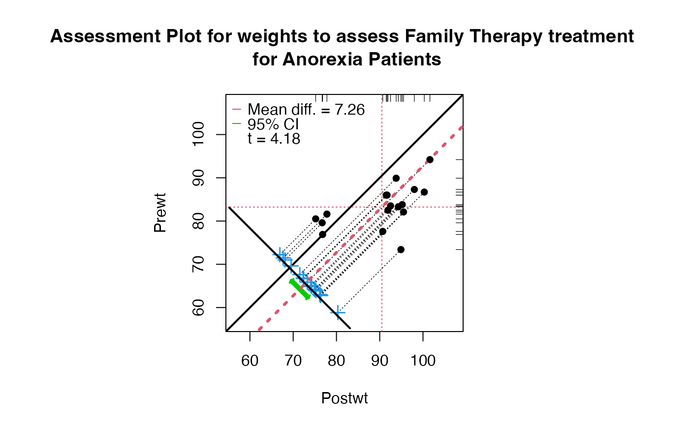
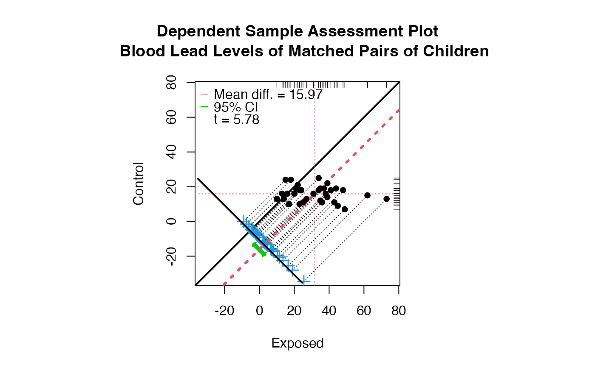

Granova for Display of Dependent Sample Data
granova.ds.RdPlots dependent sample data beginning from a scatterplot for the X,Y pairs; proceeds to display difference scores as point projections; also X and Y means, as well as the mean of the difference scores. Also prints various summary statistics including: effect size, means for X and Y, a 95% confidence interval for the mean difference as well as the t-statistic and degrees of freedom.
Arguments
- data
is an n X 2 dataframe or matrix. First column defines X (intially for horzontal axis), the second defines Y.
- revc
reverses X,Y specifications.
- sw
extends axes toward lower left, effectively moving data points to the southwest.
- ne
extends axes toward upper right, effectively moving data points to northeast. Making both sw and ne smaller moves points farther apart, while making both larger moves data points closer together.
- ptpch
controls the pch of the (X,Y) points and of differences score points.
- ptcex
controls the cex of the (X,Y) points and of differences score points.
- labcex
controls size of axes labels.
- ident
logical, default FALSE. Allows user to identify individual points.
- colors
vector defining colors of six components of the plot: (X,Y) points, horizontal and vertical dashed lines representing means of the two groups, light dashed diagonal lines connecting (X,Y) points and projections differences dotplot, differences arranged as a dotplot, heavy dashed diagonal line representing the mean of differences, confidence interval.
- pt.lab
optional character vector defining labels for points. Only used if ident is TRUE. If NULL, rownames(data) are used if available; if not 1:n is used.
- xlab
optional label (as character) for horizontal axis. If not defined, axis labels are taken from colnames of data.
- ylab
optional label (as character) for vertical axis.
- main
optional main title (as character); if not supplied by user generic title is provided.
- sub
optional subtile (as character).
- par.orig
returns par to original settings; if multipanel plots it is advisable to specify FALSE.
Details
Paired X & Y values are plotted as scatterplot. The identity reference line (for Y=X) is drawn. Since the better data view often entails having X's > Y's the revc argument facilitates reversal of the X, Y specifications. Parallel projections of data points to (a lower-left) line segment show how each point relates to its X-Y = D difference; blue `crosses' are used to display the distribution of difference scores and the mean difference is displayed as a heavy dashed (red) line, parallel to the identity reference line. Means for X and Y are also plotted (as thin dashed vertical and horizontal lines), and rug plots are shown for the distributions of X (at the top of graphic) and Y (on the right side). Several summary statistics are plotted as well, to facilitate both description and inference; see below. The 95% confidence interval for the population mean difference is also shown graphically. Because all data points are plotted relative to the identity line, and summary results are shown graphically, clusters, data trends, outliers, and possible uses of transformations are readily seen, possibly to be accommodated.
Value
A list is returned with the following components:
- mean(X)
Mean of X values
- mean(Y)
Mean of Y values
- mean(D=X-Y)
Mean of differences D = X - Y
- SD(D)
Standard deviation of differences D
- ES(D)
Effect Size for differences D: mean(D)/SD(D)
- r(X,Y)
Correlation based on X,Y pairs
- r(x+y,D)
Correlation based on X+Y,D pairs
- LL 95%CI
Lower bound for 95% confidence interval for population mean(D)
- UL 95%CI
Upper bound for 95% confidence interval for population mean(D)
- t(D-bar)
t-statistic associated w/ test of hypothesis that population mean(D) = 0.0
- df.t
Degrees of freedom for the t-statistic
- pval.t
P-value for two sided t-test of null hypothesis that population mean(D) does not equal zero.
References
Exploratory Plots for Paired Data, Rosenbaum P., The American Statistician, May 1989, vol. 43, no. 2, pp. 108-9.
Enhancing Dependent Sample Analyses with Graphics, Pruzek, R. and Helmreich, J., Journal of Statistics Education, March 2009, Vol. 17, no. 1.
http://www.amstat.org/publications/jse/v17n1/helmreich.pdf
Examples
### See discussion of anorexia graphic in EDSAG, J. Statistics Ed.
data(anorexia.sub)
granova.ds(anorexia.sub, revc = TRUE,
main = "Assessment Plot for weights to assess Family Therapy treatment
for Anorexia Patients")

#> Summary Stats
#> n 17.000
#> mean(x) 90.494
#> mean(y) 83.229
#> mean(D=x-y) 7.265
#> SD(D) 7.157
#> ES(D) 1.015
#> r(x,y) 0.538
#> r(x+y,d) 0.546
#> LL 95%CI 3.585
#> UL 95%CI 10.945
#> t(D-bar) 4.185
#> df.t 16.000
#> pval.t 0.001
# If labels for four unusual points at lower left are desired:
granova.ds(anorexia.sub, revc = TRUE,
main = "Assessment Plot for weights to assess Family Therapy treatment
for Anorexia Patients", ident = TRUE)
#> Summary Stats
#> n 17.000
#> mean(x) 90.494
#> mean(y) 83.229
#> mean(D=x-y) 7.265
#> SD(D) 7.157
#> ES(D) 1.015
#> r(x,y) 0.538
#> r(x+y,d) 0.546
#> LL 95%CI 3.585
#> UL 95%CI 10.945
#> t(D-bar) 4.185
#> df.t 16.000
#> pval.t 0.001
## See discussion of blood lead graphic in EDSAG, J. Statistics Ed.
data(blood_lead)
granova.ds(blood_lead, sw = .1,
main = "Dependent Sample Assessment Plot
Blood Lead Levels of Matched Pairs of Children")

#> Summary Stats
#> n 33.000
#> mean(x) 31.848
#> mean(y) 15.879
#> mean(D=x-y) 15.970
#> SD(D) 15.864
#> ES(D) 1.007
#> r(x,y) -0.179
#> r(x+y,d) 0.824
#> LL 95%CI 10.345
#> UL 95%CI 21.595
#> t(D-bar) 5.783
#> df.t 32.000
#> pval.t 0.000